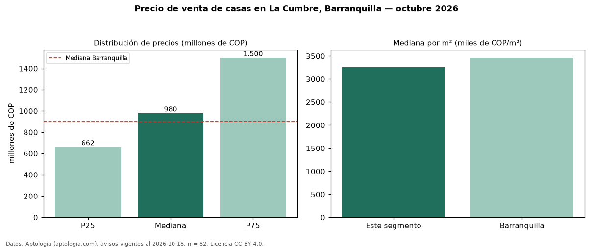

Precio de venta de casas en La Cumbre, Barranquilla — octubre 2026
En La Cumbre, Barranquilla, la mediana de precio de venta de casas es COP 980 millones, según 82 avisos vigentes. Eso es 9 % por encima de la mediana de Barranquilla para casas (COP 900 millones). Por metro cuadrado, la mediana es COP 3,26 millones/m² (n = 82 avisos con área), 6 % por debajo de Barranquilla (COP 3,46 millones/m²). El área mediana anunciada es 331 m². El segmento con más oferta es el de 3 o más habitaciones (80 avisos, mediana COP 960 millones). La mitad central de los avisos va de COP 662 millones a COP 1,50 mil millones (razón 2,3), una dispersión alta. Por precio mediano es el puesto 15 de 33 barrios de Barranquilla con al menos 30 avisos de casas en venta (COP): en la franja media. El estrato más frecuente es 5 (71 % de los avisos con estrato). Datos: Aptología (aptologia.com), CC BY 4.0 — https://www.aptologia.com/casas-en-venta/barranquilla/la-cumbre. Archivos: PDF, CSV con las cifras y gráfica PNG.

| Avisos únicos | 82 |
|---|---|
| Percentil 25 | COP 662.500.000 |
| Mediana | COP 980.000.000 |
| Percentil 75 | COP 1.500.000.000 |
| Mediana por m² | COP 3.262.041 |
Fuente: avisos vigentes de portales inmobiliarios recopilados por Aptología, deduplicados (mínimo 30 avisos únicos por celda). Precios pedidos, no cerrados. Fecha: 2026-10-18.